الدليل التشغيلي الاحترافي لنظام CRM Hotel
Professional Operations Manual for CRM Hotel
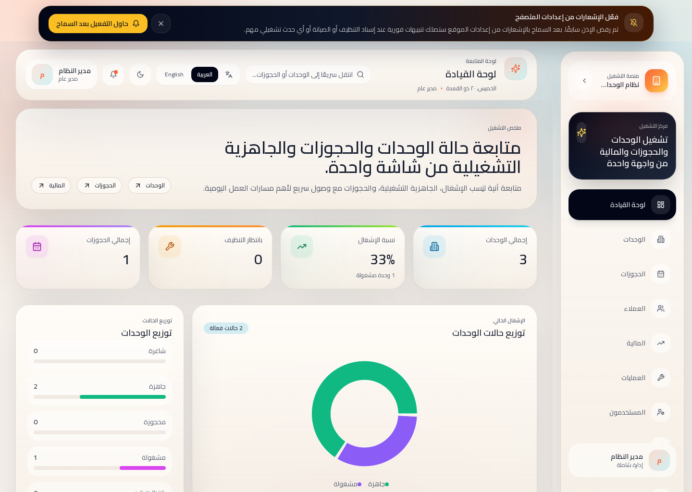
خريطة النظام ومسارات العمل
صُمم CRM Hotel كمنصة تشغيل موحدة تربط الواجهة الإدارية، التشغيل اليومي، المالية، وخدمة الفرق الميدانية ضمن تدفق واحد. هذه الصفحة تمنح القارئ خريطة تنفيذية سريعة قبل الدخول في تفاصيل كل شاشة على حدة.
System atlas
The platform is structured around one operational spine: authenticate the right user, review live readiness from the dashboard, manage units and bookings, convert real-world events into field tasks, and close the loop through finance, user governance, and account security.
Module coverage
Arabic
- اقرأ هذه الصفحة أولًا إذا كان المستند سيُستخدم في التدريب التنفيذي أو تهيئة موظفين جدد.
- تعامل مع كل شاشة في الصفحات التالية كجزء من مسار واحد، لا كوظيفة منفصلة بلا ترابط.
- كل انتقال بين شاشة وأخرى في النظام يعكس قرارًا تشغيليًا أو ماليًا أو ميدانيًا داخل العمل اليومي.
English
- Use this page as the executive orientation layer before diving into the detailed screen-by-screen explanation.
- Treat each workspace in the following pages as part of one connected operating model rather than isolated features.
- Every transition between screens represents a real operational, financial, or field decision in the day-to-day business.
1. بدء الاستخدام وتسجيل الدخول
تنطلق رحلة الاستخدام من شاشة الدخول، ومنها يوجّه النظام المستخدم تلقائيًا إلى بيئة العمل المناسبة وفق الدور الوظيفي والصلاحيات المعتمدة.
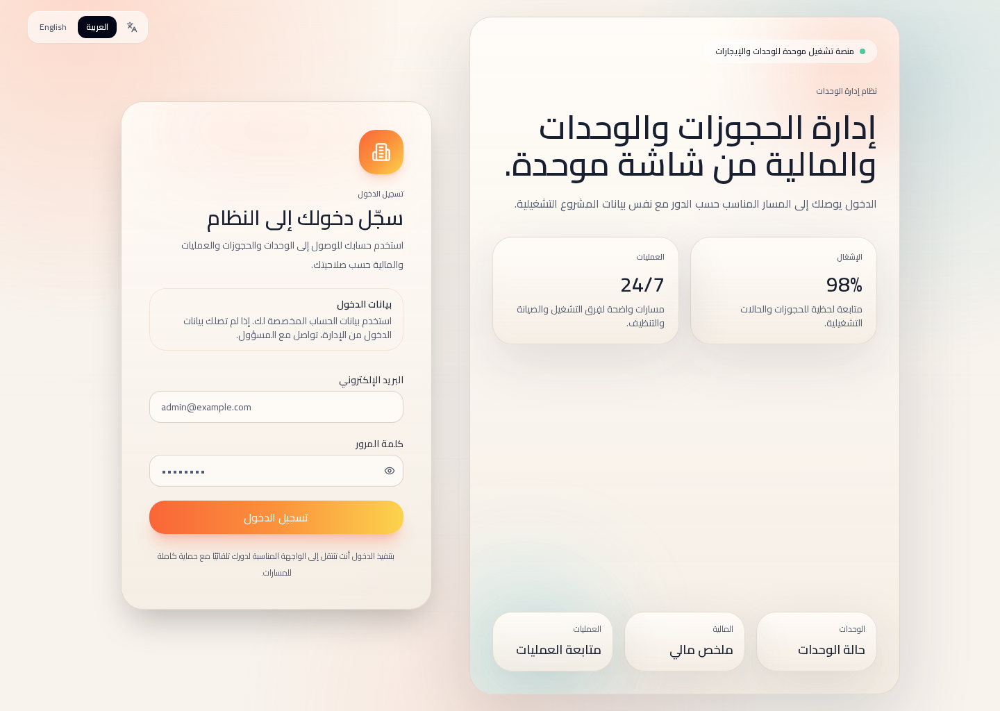
Arabic
- استخدم البريد الإلكتروني وكلمة المرور المعتمدين من مسؤول النظام أو الإدارة التشغيلية.
- بعد الدخول، ينقلك النظام مباشرة إلى المسار الأنسب لعملك، سواء كان إداريًا أو تشغيليًا أو ميدانيًا.
- يمكن تبديل اللغة من الواجهة العليا في معظم الصفحات بحسب تفضيل المستخدم أو متطلبات الفريق.
English
- Use the approved email address and password issued by the system administrator or operations lead.
- Once authenticated, the platform routes you to the workspace that matches your operational role.
- Language switching is available from the upper interface area on most major screens.
2. المسارات حسب الدور ودعم اللغتين
لا يقدم النظام واجهة موحدة للجميع فقط، بل يوجّه كل مستخدم إلى مساحة العمل الموافقة لدوره مع دعم كامل للعربية والإنجليزية واتجاهي RTL وLTR.
كيف يوجّهك النظام بعد الدخول؟
بعد المصادقة، يفتح النظام المسار المناسب تلقائيًا: الإدارة العليا، الإدارة الفرعية، المالية، العمليات، التنظيف، أو الصيانة. هذا يقلل الأخطاء ويجعل كل فريق يعمل داخل واجهته المختصة دون تشويش.
Arabic
- المستخدم الإداري يصل إلى الشاشات الشاملة مثل الوحدات والمستخدمين والتقارير العامة.
- فرق العمليات والتنظيف والصيانة ترى فقط ما يخدم سير العمل اليومي والمهام المرتبطة بها.
- دعم اللغة يضمن أن المحتوى والعناوين والرسائل تظهر بصياغة متسقة في العربية والإنجليزية.
English
- Administrative users access full management screens such as units, users, and reporting views.
- Operations, housekeeping, and maintenance teams see focused workspaces built for daily execution.
- Language support keeps labels, navigation, and feedback messages consistent in both Arabic and English.
Role-based workspaces
3. لوحة القيادة التنفيذية
تمثل لوحة القيادة نقطة المتابعة اليومية الأولى، إذ تجمع المؤشرات الرئيسية والحالات الحرجة واختصارات الوصول السريع إلى أكثر الوحدات والعمليات استخدامًا.
ما الذي تراقبه من هنا؟
تمنح هذه الشاشة الإدارة والمشرفين صورة مركزة عن الأداء اليومي: الإشغال، حالة الأعمال المفتوحة، التنبيهات، والانتقال السريع إلى الوحدات والحجوزات والعملاء والمالية دون فقدان السياق التشغيلي.
Arabic
- ابدأ يومك بمراجعة البطاقات العليا للحصول على قراءة فورية للحالة العامة.
- استخدم البحث والاختصارات للوصول السريع إلى الشاشة أو السجل المطلوب دون تنقل طويل.
- راقب البطاقات ذات الأولوية أو الحالات التحذيرية التي تستدعي تدخلاً عاجلاً.
English
- Begin each workday with the top summary cards to establish the current operational picture.
- Use search and shortcuts to move directly to the page or record you need.
- Pay close attention to warning cards or alerts that indicate time-sensitive action.
4. إدارة الوحدات والحجوزات
يعرض هذا القسم العلاقة التشغيلية بين شاشة الوحدات وشاشة الحجوزات، باعتبارهما المحور الأساسي لإدارة التوفر، الإشغال، وتدفق الخدمة اليومي.
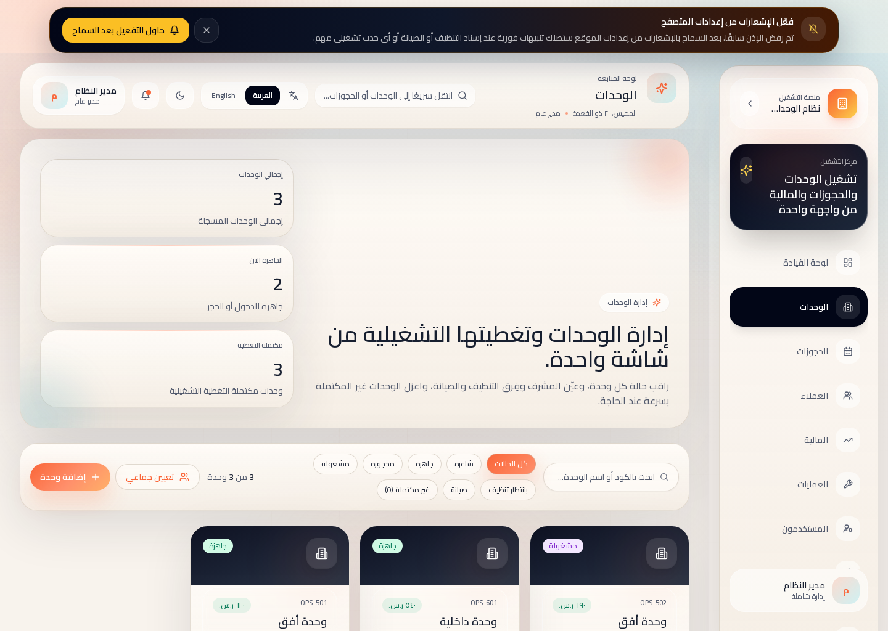
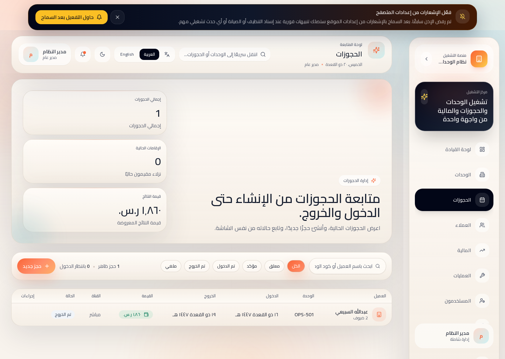
Arabic
- في شاشة الوحدات: راقب الجاهزية، الإشغال، التصنيف، الموقع، التسعير، والفرق المسندة لكل وحدة.
- في شاشة الحجوزات: أنشئ الحجز أو راجعه مع متابعة التواريخ، الحالة، العميل، والوحدة المرتبطة.
- تمثل الوحدات صورة المخزون التشغيلي، بينما تمثل الحجوزات الحركة الفعلية التي تؤثر مباشرة على ذلك المخزون.
English
- In Units, monitor readiness, occupancy, classification, location, pricing, and assigned operational teams.
- In Bookings, create or review reservations while tracking dates, status, customer context, and linked unit records.
- Units represent the operational inventory baseline, while Bookings reflect the real movement affecting that inventory.
دورة حالة الوحدة
يدعم النظام انتقالات تشغيلية واضحة مثل: شاغرة، جاهزة، مشغولة، بانتظار التنظيف، وفي الصيانة. هذه الحالات ليست وصفًا بصريًا فقط، بل تؤثر على التوفر وإسناد الفرق واتخاذ القرار اليومي.
Operational coverage
Each unit can be linked to a supervisor, housekeeping team, and maintenance team. This allows management to detect coverage gaps early and maintain full readiness across the inventory.
5. العملاء والتشغيل الميداني
يوضح هذا القسم كيف تُدار بيانات العملاء وكيف تتحول الملاحظات والطلبات والأحداث التشغيلية إلى مهام ميدانية قابلة للتنفيذ والمتابعة.
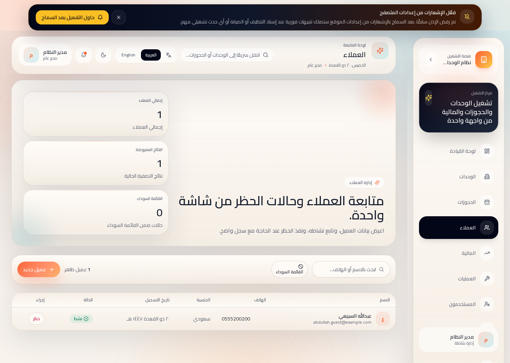
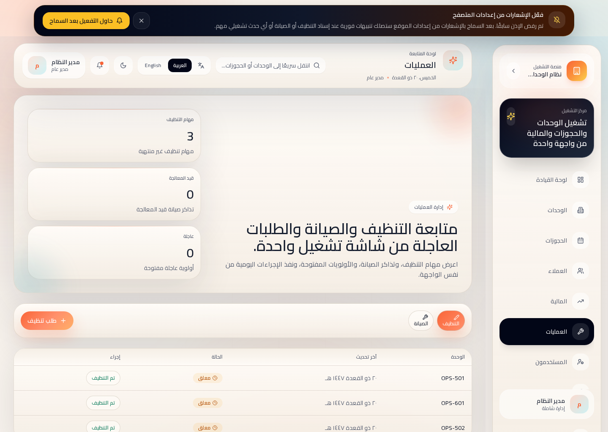
كيف يعمل التدفق التشغيلي؟
عندما يظهر طلب عميل أو حالة تستدعي تدخلاً، يستطيع المشرف أو المسؤول إنشاء مهمة تنظيف أو صيانة وإسنادها مباشرة إلى الموظف المختص. بعد ذلك تُعرض المهمة في واجهة المستلِم، وتستمر متابعتها حتى الإغلاق مع دعم التنبيهات حسب إعدادات النظام والمتصفح.
Operational flow
A customer interaction, booking issue, or service request can be converted into an actionable housekeeping or maintenance task. The assignment is created from the operations screen, routed to the responsible user, and followed through with notification-ready status visibility.
Arabic
- سجل العميل لا يقتصر على الاسم ووسائل الاتصال، بل يشكل مرجعًا للخدمة والحجوزات والتاريخ التشغيلي.
- يمكن للإدارة تطبيق القائمة السوداء مع تسجيل سبب الحظر ليظهر لاحقًا للمستخدمين المصرح لهم.
- يساعد ذلك على حماية العمليات من الحالات المتكررة أو المخالفات المعروفة دون فقدان سجل القرار.
English
- Customer records act as an operational reference for service continuity, bookings, and account history.
- Authorized users can place a customer on the blacklist and record the reason for future review.
- This supports controlled decision-making without losing the historical context behind the restriction.
6. المالية والمحاسبة وعقود الإدارة
يجمع هذا القسم الوظائف المالية المتقدمة التي لا تقتصر على الملخصات، بل تمتد إلى المصروفات، القيود اليدوية، الفواتير، كشوف الملاك، وعقود إدارة الوحدات.
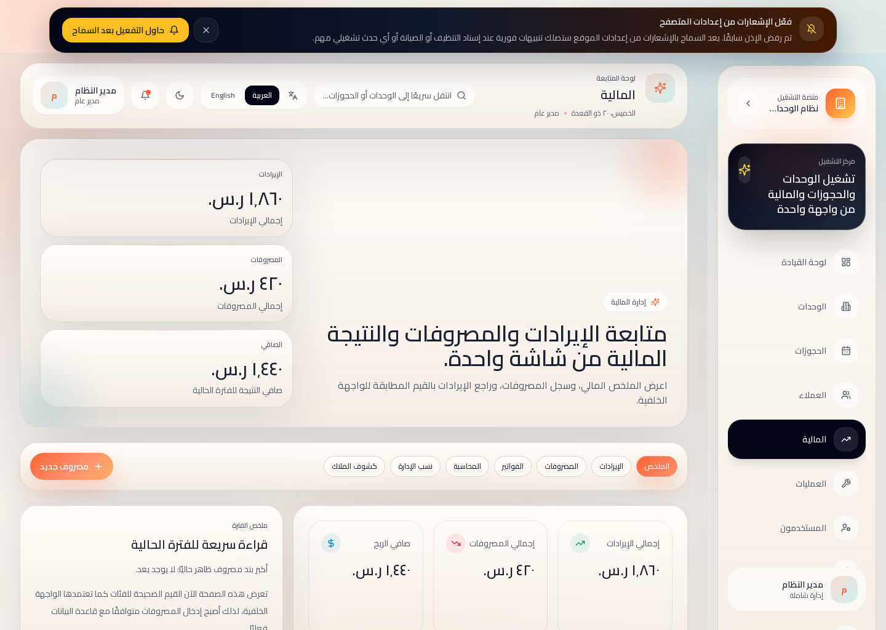
Arabic
- توفر الشاشة ملخصًا ماليًا عامًا، ثم تفتح تبويبات متخصصة للإيرادات، المصروفات، والفواتير.
- يمكن تسجيل قيد يدوي، مراجعة ميزان المراجعة، وإنشاء كشف مالك لفترة زمنية محددة.
- يدعم النظام أيضًا إدارة عقود الوحدة بين المالك والجهة الإدارية وربطها بسجل الوحدة نفسه.
English
- The finance workspace begins with a summary view, then expands into revenue, expenses, and invoice management tabs.
- Users can post manual journal entries, review the trial balance, and generate owner statements for a selected period.
- The platform also supports management contracts that link units, owners, and management entities in one financial workflow.
Finance feature map
7. المستخدمون، التغطية التشغيلية، وأمان الحساب
إدارة الحسابات في النظام لا تقف عند إنشاء المستخدم فقط، بل تمتد إلى توزيع الأدوار، قياس تغطية الفرق على الوحدات، وتأمين بيانات الدخول.
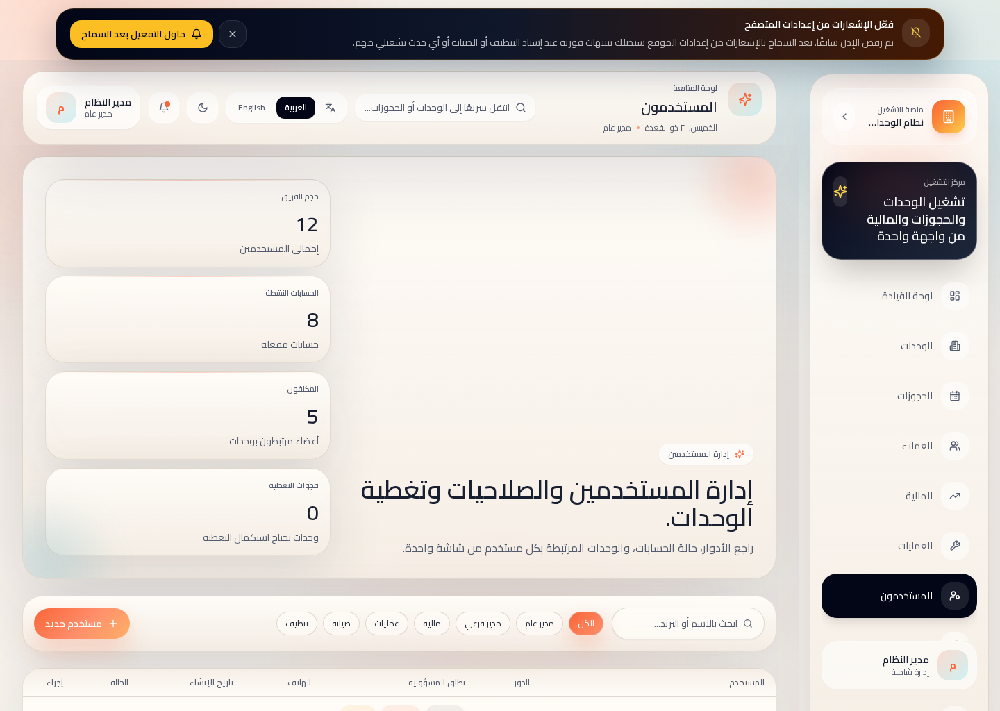
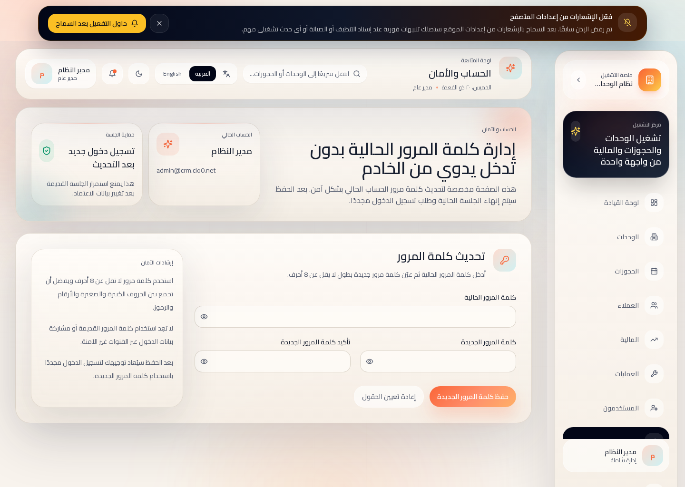
Arabic
- تتيح شاشة المستخدمين إنشاء الحسابات، تفعيلها أو تعطيلها، وإسناد الأدوار التشغيلية والمالية والإدارية.
- يعرض النظام أيضًا تغطية الوحدات: هل يوجد مشرف، وفريق تنظيف، وفريق صيانة لكل وحدة أم لا.
- من صفحة الحساب والأمان يمكن للمستخدم تغيير كلمة المرور بأمان، ثم يُطلب منه تسجيل الدخول مجددًا لحماية الجلسة.
English
- The users screen supports account creation, activation control, and role assignment across administrative and operational teams.
- The platform also exposes unit coverage so managers can identify missing supervisors, housekeeping, or maintenance teams.
- From the account and security page, users can change their password securely and are then required to sign in again.
8. التنظيف، الصيانة، والتنبيهات الفورية
يركز هذا القسم على الواجهات الميدانية السريعة التي تستخدمها فرق التنظيف والصيانة لاستلام المهام، تحديث حالتها، وإنهائها في أقل زمن ممكن.
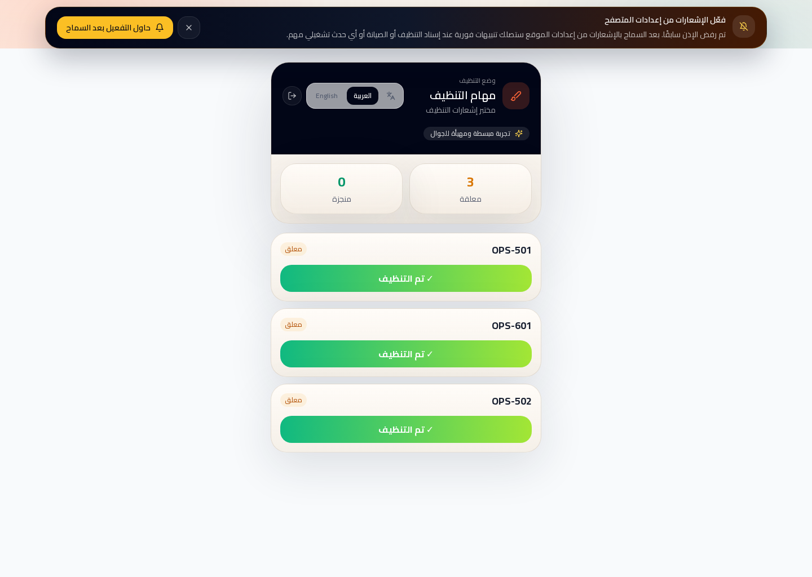
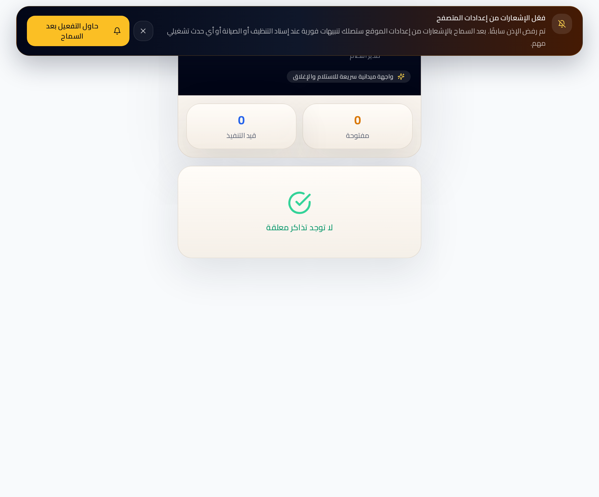
Notification-ready workflow
بعد تهيئة الإشعارات، يستطيع المستخدم متابعة المهام الجديدة من داخل الشاشة نفسها، كما يصبح المتصفح مؤهلاً لاستقبال التنبيهات الفورية عندما تكون بيئة الجهاز والمتصفح داعمة لذلك. في واجهة الصيانة الميدانية تظهر التذاكر المفتوحة وقيد التنفيذ، ويمكن بدء العمل أو إنهاء المهمة مباشرة من الشاشة.
Maintenance worker flow
Maintenance staff receive open and in-progress tickets in a simplified mobile-friendly view. They can start work, mark the task as resolved, and keep the operations team informed through status synchronization. Together with housekeeping, this closes the field execution loop from assignment to completion.
9. أفضل الممارسات السريعة
تمثل هذه الصفحة خلاصة تنفيذية سريعة يمكن اعتمادها كمرجع يومي موحد للفرق التشغيلية والإدارية.
Quick Operating Standards
Arabic
- ابدأ يوم العمل من لوحة القيادة ثم راجع العمليات المفتوحة قبل إدخال أي بيانات أو طلبات جديدة.
- حدّث حالة الوحدة والحجز بمجرد وقوع التغيير حتى تبقى المؤشرات والقرارات مبنية على بيانات صحيحة.
- التزم بالصلاحيات المعتمدة فقط، وراجع الحساب والأمان بشكل دوري عند أي تغيير في الأدوار.
- فعّل الإشعارات للفرق الميدانية حتى تصل المهام فور الإسناد وتقل فترات الانتظار.
English
- Start each workday from the dashboard, then review open operations before creating new records or requests.
- Update unit and booking states immediately so reporting, alerts, and decisions remain reliable.
- Use only approved permissions and review account security whenever responsibilities change.
- Enable notifications for field teams so assignments are delivered without operational delay.